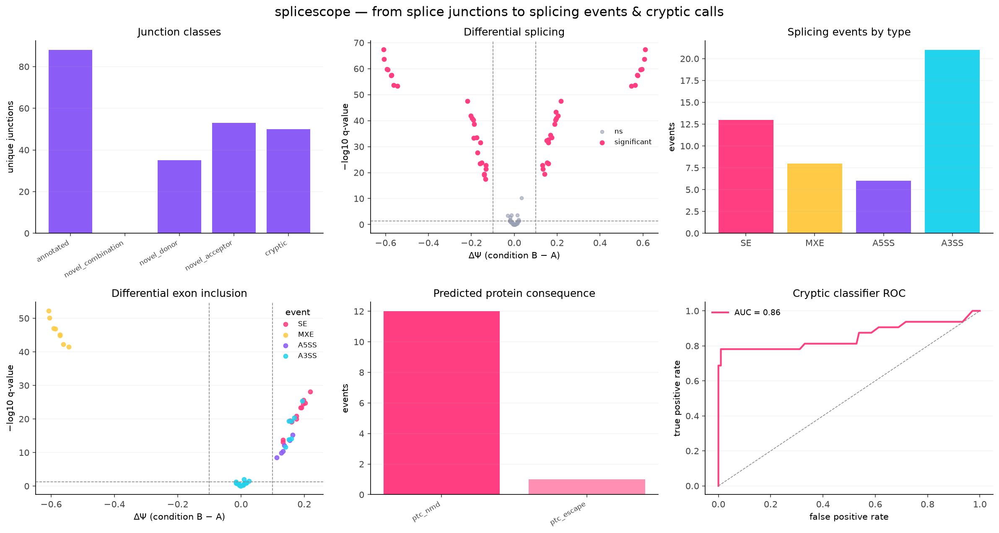
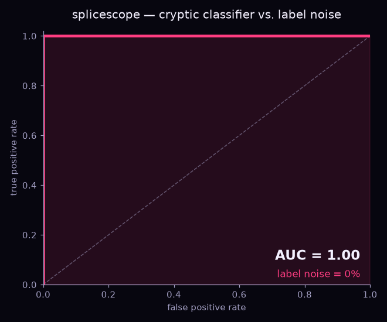

Dr. Elmasnur
Yılmaz
I study how TDP-43 regulates alternative splicing, cryptic exons and polyadenylation in ALS/FTD, combining wet-lab work with RNA-seq analysis. I earned my PhD at Ege University in 2026.
I'm equally at home at the bench and in the terminal — generating the data and writing the code that makes sense of it — so I can carry a project from cell to FASTQ to biological insight.
Wet-lab scientist and bioinformatician
I studied molecular biology and genetics at Istanbul Technical University (İTÜ), did my MSc in neurogenetics at IBG (Dokuz Eylül) with a research visit to Newcastle University, and I earned my PhD at Ege University in 2026.
My work spans both sides of the bench: I run the wet-lab experiments and, as a bioinformatician, build the RNA-seq pipelines that analyze them. My main focus is post-transcriptional regulation — how TDP-43 shapes splicing and RNA processing in neurodegeneration.
Earlier, I worked on rare-disease genomics, using whole-exome sequencing to identify pathogenic variants in consanguineous families.
Seeking a US postdoc in RNA biology, bioinformatics or computational genomics — fellowship-competitive (TÜBİTAK 2211-A / 2214-A) and ready to pursue external funding.
Working on RNA & disease
From raw sequencing data to differential splicing and expression results.
TDP-43 & Cryptic Exons
How loss of TDP-43 drives cryptic exon inclusion and altered splicing across the transcriptome in ALS/FTD.
Alternative Polyadenylation
TDP-43 depletion deregulates polyadenylation sites genome-wide, affecting 3′UTRs and mRNA processing.
Reproducible Pipelines
End-to-end RNA-seq workflows in Snakemake and Nextflow on SLURM HPC, from FASTQ to figures.
Rare-Disease Genomics
Whole-exome sequencing and runs-of-homozygosity to identify pathogenic variants in consanguineous families. Published in Brain.
Pharmacology & Cancer
Wet-lab studies on phytochemical anticancer mechanisms, calcium signaling, and drug resistance in hepatocellular carcinoma.
AI in Genomics
Machine learning for precision medicine and multi-omics integration (Stanford DDRC, Compgen2025).
My RNA-seq & splicing pipeline
Wrapped in Snakemake / Nextflow and run on SLURM HPC — reproducible from raw reads to figures.
Featured code & reproducibility
A cryptic-splicing toolkit engineered end to end: it classifies splice junctions, quantifies splice-site usage (Ψ) and event-level PSI across four rMATS-style event classes — cassette exons, mutually exclusive exons and alternative 5′/3′ splice sites (SE / MXE / A5SS / A3SS), tests differential splicing (ΔΨ + Mann–Whitney + FDR), runs pathway over-representation (ORA), and trains a cross-validated classifier — shipped with a model card — to prioritise genuine cryptic events over noise. Bundled with a Nextflow pipeline, a Streamlit dashboard, an executed tutorial notebook, tests and GitHub Actions CI; runs end to end on synthetic data, no downloads.
The full computational backbone of my PhD thesis, engineered for one-command reproduction. Snakemake workflows drive the whole arc — TDP-43 knockdown → differential splicing (rMATS / MAJIQ) and expression (DESeq2) → protein-domain / FIS mapping, disease-overlap enrichment, pharmacology & molecular docking, and wet-lab validation. Conda-pinned environments and a SHA-256 manifest guarantee bit-for-bit provenance from raw reads to every figure.
View on GitHub →Companion code for an integrative HCC manuscript (TRPC6 / STIM1 prognostics), structured as 11 chained, self-documenting modules: TCGA survival, GEO differential expression, PPI networks, GSEA, co-expression, Cox proportional-hazards modelling, DepMap drug-sensitivity mining, and a composite SOCE risk score linked to clinical outcome — a full bench-to-clinic multi-omics pipeline in one repository.
View on GitHub →A portfolio built like software, not scripts: packaged with pyproject.toml, covered by a pytest suite and gated by GitHub Actions CI on every push. Intentionally tiny datasets let anyone reproduce each analysis in seconds — reproducible, test-driven bioinformatics engineering.


Where I want to go next
My work has moved across neurogenetics, RNA biology, cancer pharmacology and rare-disease genomics, and the thread running through all of it has been computational: finding the signal in noisy, high-dimensional data, and making every analysis reproducible enough to trust.
I'm open in topic but deliberate in method. I'm drawn to problems where careful bioinformatics changes what we can actually see in the biology — and I'd rather learn a new system well than stay inside a single one.
- Turn large, messy biological datasets into clear, reproducible answers.
- Grow deeper into multi-omics integration and machine learning for genomics.
- Build analysis tools and workflows that others can trust and reuse.
What I bring is depth and adaptability in equal measure — I pick up a new field quickly, and I care about getting the analysis right.
Selected work
Peer-reviewed papers and conference presentations.
Pharmacological inhibition of store-operated calcium entry enhances sorafenib-induced antitumor effects in Huh7 hepatocellular carcinoma cells
Comparative Splicing Analysis of Calcium Signaling Genes upon TDP-43 Gene Silencing
Cytotoxic Activity of Salvia tomentosa and Methyl Carnosate-12-Methylether on Cancer Cell Lines
Disruption of TDP-43 Expression Leads to Transcriptome-Wide Deregulation of Polyadenylation Sites
High diagnostic rate of trio exome sequencing in consanguineous families with neurogenetic diseases
Autosomal recessive variants in TUBGCP2 alter the γ-tubulin ring complex leading to neurodevelopmental disease
Confirmation of TACO1 as a Leigh syndrome disease gene in two additional families
Severe neurodevelopmental disease caused by a homozygous TLK2 variant
COL4A1-related autosomal recessive encephalopathy in 2 Turkish children
A novel mutation in the coiled-coil interaction domain of LAMB1 extends laminin-related cortical malformation phenotypes
Tools I work with
RNA-seq & Splicing
Stats & Expression
Code & Pipelines
Wet Lab
Genomics & Variants
AI / ML
Get in touch
Open to postdoc positions and research collaborations. Feel free to reach out.
elmasnrylmz@gmail.com